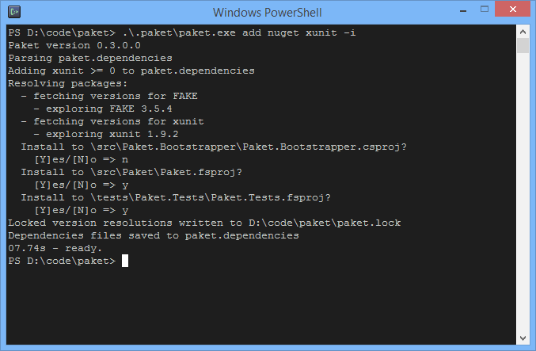

paket add
Adds a new package to your paket.dependencies file.
1: 2: 3: |
|
OPTIONS:
1: 2: 3: 4: 5: 6: |
|
the projects's paket.references file.
--redirects Creates binding redirects for the NuGet packages.
--createnewbindingfiles
Creates binding redirect files if needed.
--clean-redirects Removes all binding redirects that are not specified by Paket.
--no-install Skips paket install process (patching of csproj, fsproj, ... files) after
the generation of paket.lock file.
--keep-major Allows only updates that are not changing the major version of the NuGet
packages.
--keep-minor Allows only updates that are not changing the minor version of the NuGet
packages.
--keep-patch Allows only updates that are not changing the patch version of the NuGet
packages.
--touch-affected-refs Touches project files referencing packages which are affected, to help
incremental build tools detecting the change.
--verbose, -v Enable verbose console output for the paket process.
--log-file -v flag, then Paket will run in verbose mode and show detailed information.
With --log-file [FileName] you can trace the logged information into a file.
Adding to a single project
It's also possible to add a package to a specified project only:
1:
|
|
See also paket remove.
Sample
Consider the following paket.dependencies file:
1: 2: 3: |
|
Now we run paket add nuget xunit --interactive to install the package:

This will add the package to the selected paket.references files and also to the paket.dependencies file:
1: 2: 3: 4: |
|
Full name: Microsoft.FSharp.Core.Operators.id
val single : value:'T -> single (requires member op_Explicit)
Full name: Microsoft.FSharp.Core.ExtraTopLevelOperators.single
--------------------
type single = System.Single
Full name: Microsoft.FSharp.Core.single